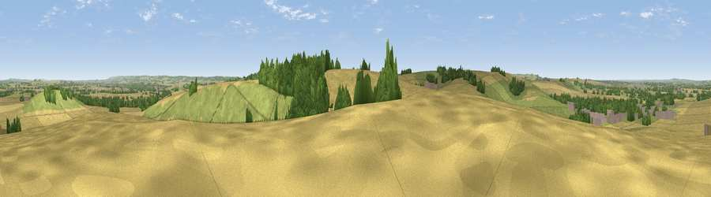

Viewpoint near Blewbury
#16056 in England · top 17% of its area beats it · near BlewburyThe view, rendered

A 360° render of this exact spot computed from the terrain model, tree cover and land cover — summer colours, afternoon light, calibrated against photographs of famous viewpoints. Real trees, hedges and buildings will differ in detail.
The panorama
Grey silhouette: terrain skyline in each direction (720 bearings, Earth curvature and refraction included). Dashed green: skyline with trees (+15 m) and buildings (+8 m) as obstacles. Blue strip: how far the ground is visible on each bearing.
Where the view opens
Wedge length = distance to the farthest visible ground on that bearing (vegetation-aware). Rings at 10, 25 and 50 km.
What fills the view
47% cropland · 35% grassland · 15% woodland · 3% built-up
Angular shares of the visible panorama (visual magnitude), not map area. Landscape diversity 0.48 (0–1 Shannon).
Key numbers
More beautiful places nearby
The staircase of upgrades: each row has a higher view potential than everything closer. Driving times are estimates from straight-line distance, calibrated against real road routing — check an actual route before setting out.
| Place | Direction | Drive | Score |
|---|---|---|---|
| Viewpoint near Blewbury | WSW · 1 km | ~4 min | 59.9 |
| Viewpoint near Blewbury | WSW · 2 km | ~5 min | 60.8 |
| Viewpoint near Compton | S · 3 km | ~7 min | 64.1 |
| Castle Hill | NNE · 8 km | ~16 min | 68.3 |
| Round Hill | NNE · 8 km | ~16 min | 70.1 |
| Viewpoint near Watlington | ENE · 18 km | ~31 min | 70.6 |
| Viewpoint near Lewknor | ENE · 20 km | ~34 min | 70.8 |
| Viewpoint near Lewknor | ENE · 22 km | ~37 min | 74.4 |
51.56240, -1.21915 · source: screening · position refined by local search. Computed location — check access rights before visiting.